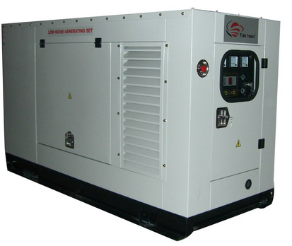

Product range of A K Enterprizes
Diesel Generator

We offer diesel generating sets, which are available in 15 KVA to 750 KVA in silent / non silent mode, single phase / three phases. These are robust in designs and construction and are manufactured ensuring low operational cost and noise level. Ready to use generator sets A warranty of 24 months from the date of the DG set supply or 5000 normal operating hours whichever is earlier Lowest Life Cycle Costs High generator set availability Eco friendly options available The various Diesel Generator sets manufactured by Kirloskar are the KGPI series 15KVA to 600KVA and under the collaboration with SEMT-Pielstick in the range of 2000 KVA to 6375 KVA